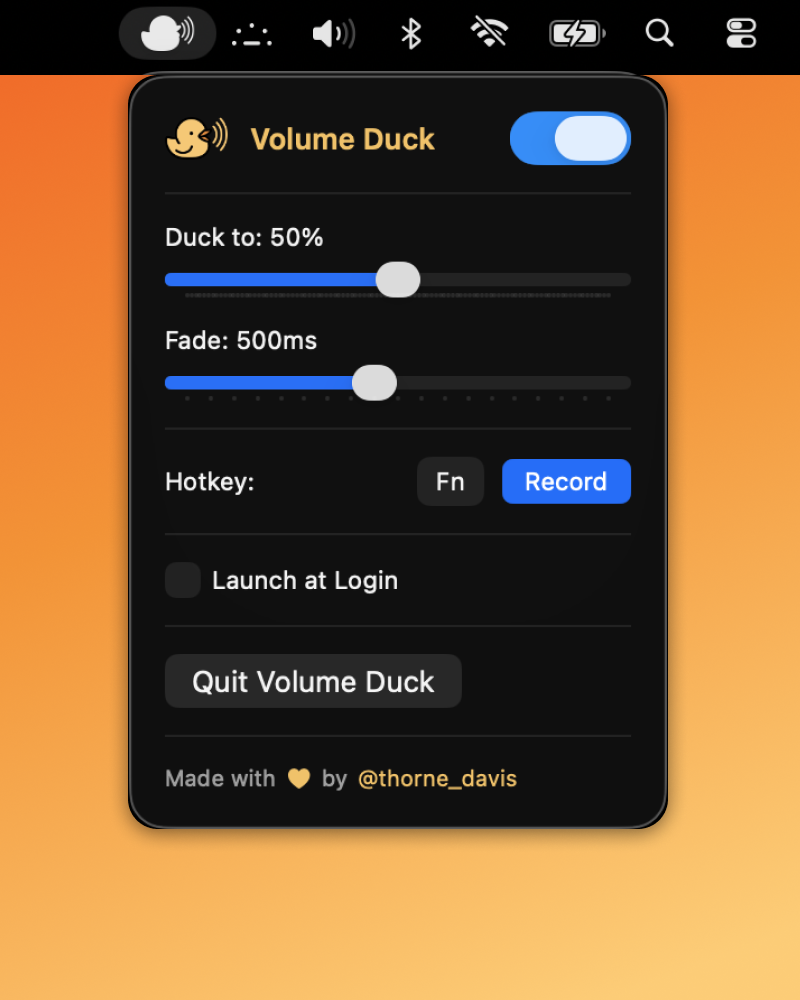

Built for dictation on macOS
Lower your audio while you talk.
Volume Duck sits in your menu bar and automatically ducks your Mac's volume while you hold your dictation hotkey. Let go, and your audio fades smoothly back in.
Tiny download. No sign-up. No app store ceremony.
Volume Duck
Hold a key. The room ducks.

No more reaching for volume
Keep music, podcasts, or reference audio playing without manually turning everything down every time you speak.
Tuned for the menu bar
Set it once, leave it running, and bring it up only when you want to tweak the hotkey or fade timing.
Made for one job
Duck level, fade timing, launch at login, and a recordable hotkey. Nothing bloated around it.
How it works
Hold the key you already use to dictate, and let the app do the rest.
-
1
Choose your hotkey
Use a single key or a compact combo and record it directly from the app.
-
2
Set your duck amount
Bring your output down gently or almost all the way, depending on how strong you want the dip to feel.
-
3
Adjust the fade
Pick how quickly audio drops and returns so the transition feels smooth instead of abrupt.
What you can tune
Everything on the page maps directly to a control in the app.
Duck Level
Set the exact target volume
Go subtle for background listening or drag it lower when you want dictation to cut through clearly.
Fade Timing
Make transitions feel natural
Fast enough to be useful, smooth enough not to sound like the audio is being chopped off.
Hotkey
Fits your dictation habit
Use whatever key or small combo already makes sense in your workflow instead of relearning a system.
Launch at Login
Ready every time you sit down
Leave it on and the app is there the moment you start your Mac, without taking up dock space.
Before you install
A fast setup, plus two things worth knowing up front.
- Download and open the DMG. Drag Volume Duck into your Applications folder.
- Grant the keyboard permission macOS asks for. Depending on your macOS version, that will be Input Monitoring or Accessibility.
- Record your hotkey and set your fade. After that, the app is basically out of your way.
Ready when you are